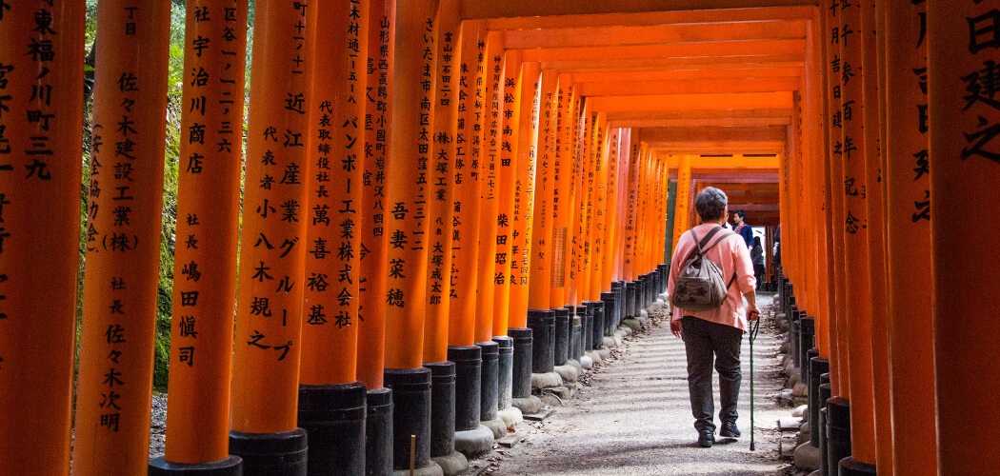
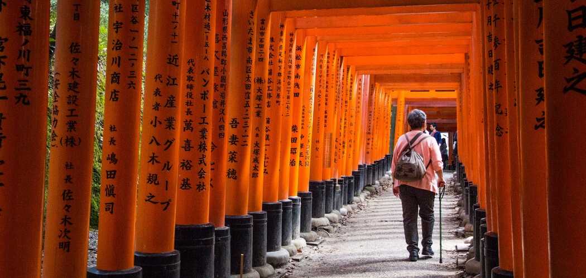

Working in Japan
The land of the rising sun has long been a tourist destination for those looking to experience a different culture - visitors can explore Japan's wonderful gardens, be in awe of the traditional geisha dance and take time to sample its fine cuisine. But consider making your stay more permanent by living and working in Japan - you'll immerse yourself in its unique way of life and gain experience of Japanese business. The cost of living is higher in major cities such as Tokyo - however, these popular urban areas often bring fellow overseas travellers together and help create a sense of community. Learning Japanese prior to arrival is certainly recommended, although you'll find opportunities to take courses that will get you up to speed. Getting around the country is simpler, thanks to a highly efficient and reasonably priced public transport system. During your free time you could catch the bullet train down to the volcanic island of Kyūshū, or travel north to the popular ski and snowboarding destination of Hokkaidō.

 
